我希望你在“稳定婚姻问题”知识的“武装”下，已经具有足够的勇气在派对中主动接近帅哥或美女了。然而参加太多派对会让人疲惫不堪，而且不是每个派对上都有乔伊和瑞秋那样有趣的人。那么为何不换一种方式，在自家客厅中就能舒适地成功找到伴侣呢？该试试网络交友了。
在当今社会，恐怕每个人身边都有在交友网站上相识的情侣。不论过去多么排斥，现在我们已经接受了这种大范围寻找配偶的方式。最新数据显示，美国四分之三的单身人士都曾尝试过交友网站，而新婚夫妇中有三分之一最初都是在网上结识的。
这种方式的吸引力显而易见。假如在酒吧里看上一个女孩，而你们身边都有一群朋友，那你再也不必鼓足勇气在众目睽睽之下接近她了。你也不必经受与植物一样“活泼”的人相亲的折磨。有了网络，你的天涯中就多了很多芳草。现如今的交友网站能让你轻松遇到无数符合你准确要求的单身人士。完美的情人只有一网之隔。
至少我们是这样认为的，然而过多选择不利于排除糟糕选项。对于有些人而言，网络交友就是结识一连串的青蛙，到最后也没遇见半个王子。对于另外一些人而言，更多的选择意味着更多的拒绝。好消息是——一如既往地——数学能助你一臂之力。
对于像我这样研究人类行为的数学家而言，网络交友是个慷慨的恩赐。人们的网络足迹启发了很多关于爱的有趣见解。数学家们在这些单身人士不经意间对其进行了研究，不断从中发现牵红线的科学方式。通过追踪调查在交友网站相识并成功牵手的情侣，我们还明白了现有的科学牵线方式为何无效——至少是没有获得预期的效果。通过研究哪类人在交友网站上更受欢迎，科学家们还可以提供让你从日益壮大的网络单身队伍中脱颖而出的建议。
关于网络交友以及它教给我们的关于自身的认识，我可以写一整本书。可惜，现在只能写这一章。但我希望你依然能够看到，数学是如何作用于现代的求偶方式的。
交友网站提供了低门槛的优质陌生人名册。你可以通过年龄和地区设定来过滤人选，开始寻爱之路。然而如果你的条件更具体，有些网站会更深入地提供科学的寻偶方式。
这些网站为你过滤掉不符合条件的用户，并向你推荐很有可能因只看外表或地区而忽视的对象。最成功的此类网站之一便是OkCupid，这是由一群数学家建立的免费交友网站，其核心是颇为考究的运算法则。
运算法则就像菜谱，是一系列用来完成某种任务的逻辑步骤。OkCupid是通过用户在注册时填写的问卷来进行二人匹配度的运算的。
三个关键因素是：你的回答，你期待配偶如何回答，每个问题对你来说的重要程度。
最后一个因素尤为重要，因为它使每个单身人士的交友过程个性化。或许你认为未来伴侣的政治立场比他是否要孩子更加重要，抑或相反。或许对方的收入，或是对瑞恩·高斯林电影的喜爱程度是硬性标准（倘若如此，你或许该重新考虑一下，参见第一章）。每个人都需要一种能筛选出真正重要特征的机制。
OkCupid会问“这个问题有多重要”，并给每一个答案设定分值：
1. 完全不重要 1分
2. 略微重要 10分
3. 比较重要 50分
4. 非常重要 100分
5. 必不可少 250分
这样就确定了潜在伴侣在不同问题上会得到的最高分。
我随意选取两个名字，哈利与赫敏，来解释匹配度的算法。
只提两个问题：“你喜欢魁地奇球赛吗？”“你在黑魔法防御术上是否在行？”
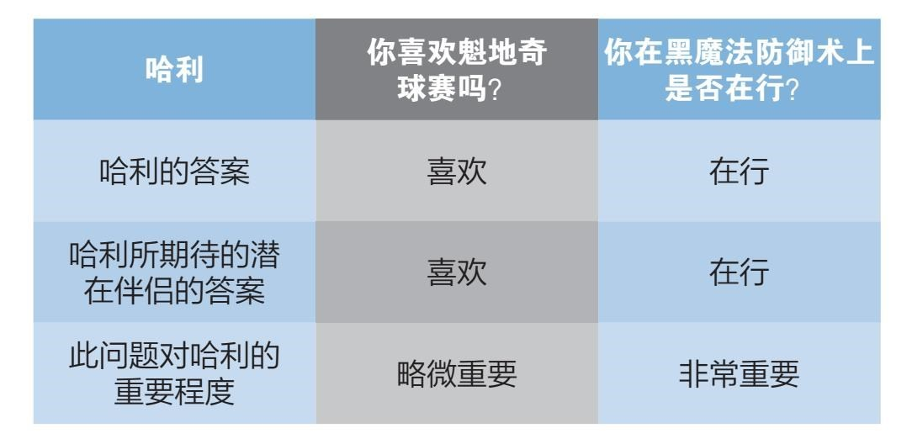
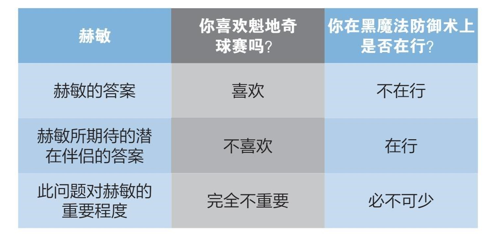
根据这些答案，系统用下列简单的三个步骤来计算哈利与赫敏的匹配值。
首先，我们要计算赫敏是否符合哈利的要求。
哈利认为第一个问题只是“略微重要”。这意味着赫敏能拿到的最高分是10分。赫敏符合此项要求，因此在第一题中得到了10分。
哈利认为第二个问题“非常重要”，而赫敏的答案是否定的，因此在此题中得分为0。
赫敏对于哈利来说，匹配值是：
（10+0）/（10+100） = 10/110 ≈ 9.1%
接下来，我们用同样的方法计算哈利对于赫敏来说的匹配值。
看了赫敏的喜好，我们知道第一题对她来说只值1分，因为她认为这个问题“完全不重要”。哈利第一题的答案是肯定的，而赫敏期待的答案是否定的，因此哈利在第一题中得分为0。或许赫敏不想和整天谈论魁地奇球赛的人在一起生活（我们都有类似的体会）。
与此同时，对于赫敏来说第二题值250分。坦白承认吧，谁不会被一句及时的“除你武器”魔咒而迷得神魂颠倒？哈利得到了满分250分。
哈利对于赫敏来说的匹配值是：
（0+250）/（1+250）=250/251 ≈ 99.6%
赫敏对哈利迷恋得无法自拔。
最后一步是合并前两步得分，获得一个总的匹配值。
说到平均分，很多人会自然而然地计算出算术平均值。这早在上学期间就深深烙印在我们的脑海中，但是假若你“成功”忘记了，计算方式是这样的：赫敏的99.6%与哈利的9.1%之和除以2，即得54.35%，与各自原本得分各相差45.25%。
在约会时，双方的意见都很重要。一方有的是时间而另一方掐着表倒计时这种情形，与两人都相对开心的情形相差甚远，但两种情况都有可能得到54.35%的算术平均值。如果我们要区分这两种情形，那就要用不同的平均值算法。
此时运用几何平均更明智。几何平均基于乘法而非加法。为我们仅有的两个问题[1]计算答案的表达式是：
（赫敏的得分×哈利的得分）^（1/2）,
即，
（99.6% × 9.1%）^（1/2）= 30.1%。
几何平均利用乘法而非加法来计算出一个乘积的中间值（30.1%是9.1%的约3.3倍，而99.6%又是30.1%的约3.3倍），这样就更公平地计入了双方的意见。哈利或许符合赫敏的要求，但他无法忍受赫敏缺乏决斗能力的弱点，因此匹配值为30.1%。
这种算法被运用在OkCupid的上百个问题和千百万用户中，成就了世界上最成功的一个交友网站。这是基于个人喜好的最考究的寻偶方式之一。OkCupid和eHarmony等类似网站是与亚马逊和网飞并驾齐驱的最受用户推荐的互联网引擎。
然而还有一个问题——如果互联网是最佳媒人，那为什么还会有糟糕的约会呢？如果这种科学方法如此有效，那每个人的第一次约会也都将是最后一次，不是吗？运算法则难道不该为人们找到完美的伴侣并且延续这种完美吗？或许那些问卷和匹配分值并不是问题的全部。
我曾经和网上认识的一位年轻男子约会，而他认为中途偷走我的一只鞋是合理的举动。还有一次，我从卫生间出来，发现对方穿着我的外套，已经把它撑破。仿佛不论我的网络个人资料有多详尽，不论我回答了多少个网络问题，依然无法避免遇到一个问我我的红色头发是否是草莓味的人。[2]
个人偏好和个性化列表是根据个人要求筛选对象的理想因素。然而有着80多年发展历史的人际关系科学教给我们一个重要的道理：用个人数据预测一对情侣的匹配度是行不通的。
问题在于，人们在得到之前并不知道自己要什么。不像在亚马逊和网飞上那样，人们清楚地知道自己喜欢什么类型的产品或电影，关于个人喜好的问卷是不足以预测和谁在一起能够幸福的。归根结底，寻找伴侣比买一套DVD（数字多功能光盘）要复杂得多。
或许你我都喜欢看瑞恩·高斯林的电影，但这并不代表我们愿意一起看他的电影。虽然对瑞恩·高斯林电影的爱好可以成为谈话初期或是第一次约会中不错的切入点，但是把它作为重要因素来预测长期关系中的匹配程度则不太现实。
然而未能捕捉牵手成功率的还不仅仅是电影偏好这类无关紧要的标准，任何个人数据的组合皆是如此：人口统计数据、政治派别、家庭背景等等。它们都无法提供有关现实中二人匹配度的重要、有意义的标准。
OkCupid甚至发表了一篇题目很有意思的博客文章：《我们做活人实验！》。文章承认匹配分值在预测“长期”匹配度中只取得了有限的成功。为了测试现有的匹配度算法，程序员让电脑欺骗一部分用户，在实际匹配度只有30%的情况下显示90%的匹配度。
实验得出了一些有趣的结果：当用户相信匹配值很高时，他们首次向对方主动发信息的比例从12.4%增长到了14.5%。
人们若认为彼此合拍，都会更愿意进行对话。这意味着OkCupid的用户相信网站的算法。或许这并不让人惊讶，不过你可能认为当双方发现彼此匹配度并不高时会很快结束对话。
大部分用户的确是这样做的。发出第一条信息后，被欺骗的用户群中只有15%的用户坚持进行了四条或四条以上信息的对话。然而未被骗用户群中知道彼此不匹配而仍旧进行相同程度对话的比例只有9%，依然较低。
这些被骗且匹配度实际并不高的用户中只有15%的人在初次联系后继续进行对话，然而在匹配度真的有90%的用户（未被骗）中继续进行对话的比例只有17%，数据的接近程度令人惊讶。匹配分值高的两个人并没有真正地更易相处。
两个数字间的微小差距证明，OkCupid的算法只能在有限的程度上预测牵手成功率。当然，两人越多共同点，越容易进行对话，但也不过如此。从长远角度来讲，它不一定能帮上忙。
这并不是OkCupid科学原理中出现的漏洞。它的算法完全达到了设计要求：按照自己列出的条件筛选单身人士。这里的问题是：人们并不知道自己真正想要的是什么。所以准确预测二人匹配度的算法根本不存在。
不过我们离真相也不远，因为虽然大脑不清楚自己的需求，但是一旦遇到了，我们的身体的确能知晓那就是我们想要的。
你若遇到过一见如故的人，便知道这种体验是多么令人兴奋，但你可能没有意识到，为了发出投缘的信号，你的行为发生了何种微妙的变化。科学家早就发现，我们在被他人吸引时会模仿对方的身体语言。我们的瞳孔会放大，会调整用词以模仿对方的语言习惯，二人的笑声也会变得相似。这些变化都是在几分钟内发生的，而这些迹象都能用来量化二人之间的投缘程度。
然而，或许令人惊讶的是我们与他人首次见面时发出的信号被证明与长久匹配度是相关的。它可以提供比问卷调查可靠得多的指标。
西北大学心理学教授伊莱·芬克尔在所谓的双方“下意识同步”课题上下了很大功夫。他认为，让交友网站纳入这些指标的科技已经存在，或至少指日可待。
假若你可以通过视频聊天系统，在一个晚上进行一系列短暂的快速约会。类似语音助手的工具能够记载你的语言习惯，而图像识别软件可以记录你的身体语言。一个晚上下来，你会得到一份真实、有意义的匹配度统计，为你决定在现实生活中该赏光见谁提供了更好的依据。
而数学，作为科学的语言，在这些开发过程中起着关键性作用。
前景是令人兴奋的，不过我觉得这些想法是对现有匹配值算法的提升，不会完全取代它们。对寻偶方式的各式需求总是会存在，不论是具体、个性化、费时间的计算方式，还是类似Tinder和Grindr（Tinder和Grindr均为国外手机交友应用）的省事服务。没有任何网站可以担保每次都能为你找到完美搭档，但如果你决定花些功夫，还是能够找到合适人选的。
问卷式寻偶法还存在另一个问题，这也是人们的普遍怀疑：这种选择是否完全取决于照片？实际上，Tinder和Grindr之类的交友网站就彻底摒弃了“个人介绍”一栏，它们让你翻看当地单身人士的照片，仅通过长相来选择约会对象。但是网络世界并不如想象中那般充满评判，这让大多数不那么符合大众审美标准的人深感欣慰。
在过去的几十年里，数学家、OkCupid的创始人之一克里斯蒂安·鲁德尔一直在他的网站上收集用户资料，从而研究人们在交友网站的行为模式。他有一些有趣的发现，包括求偶时人们谈论自己的方式，浪漫关系初期的语言和互动，以及关于魅力重要性的惊人数据。
我个人最喜欢的一个发现是：长相不能决定人气。实际上，如果一些人认为你很丑，反而对你有益。
OkCupid网站上有一个可选项，允许你在1~5的分值范围内为他人的魅力值评分。为了检验魅力与人气的关系，OkCupid团队随机选择了5 000名女性用户，并对她们每个人的平均魅力值得分与每月收到的信息数量做了比较。
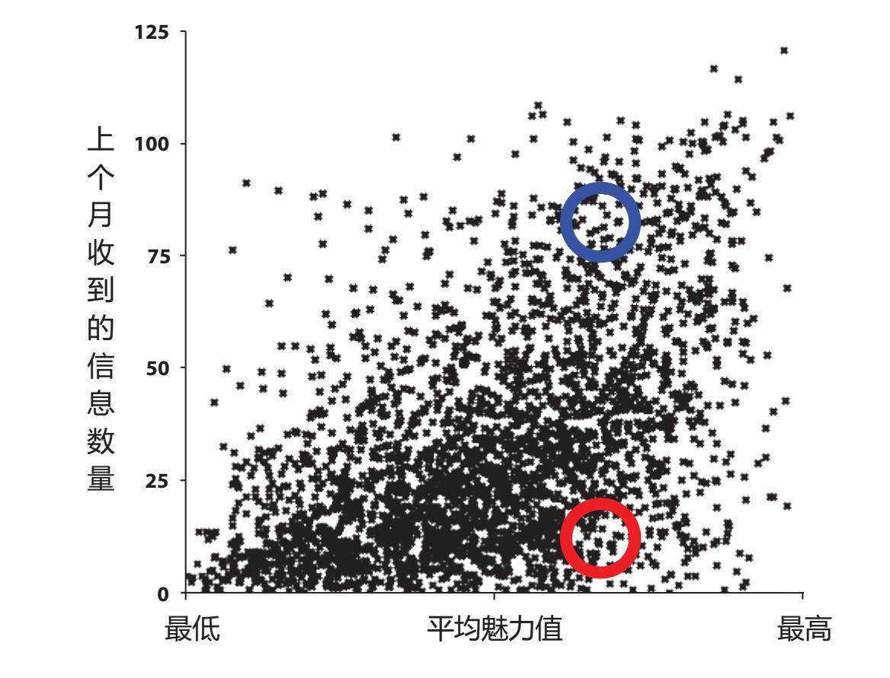
测试结果见上图。每个黑色的数据点代表一个用户。人气越高，越靠上方，魅力值越高，则越靠右边。一眼望去仿佛是一团麻，数据点遍布全图。然而数据的分散效果说明了非常有趣的一个事实：人气高的不仅是美女。
那么如果高颜值不足以让你受欢迎，真正的原因又是什么呢？在魅力值相同的情况下，身处坐标上方的高人气单身人士（蓝色）和下方的低人气人士（红色）差别又在哪里呢？
OkCupid团队发现，答案在于他人如何看待你的魅力。这里举例说明最合适。假设我们要为两个尤为可爱的女性卡通人物的魅力值打分：《摩登原始人》中的威尔玛和《飞出个未来》中的莉拉。
我想我们都会认同威尔玛是极其美丽的女人，没有人觉得她丑，但公平地说，她也不是兔子杰西卡那样的尤物。
让我们比较一下威尔玛和莉拉的魅力值得分。包括我在内的一些人认为莉拉非常性感，然而她只有一只眼睛，这对于一些人来说是不能接受的。
我猜两位女士各自的平均分不相上下，然而正在寻偶的单身卡通人士为她们评分的方式却会是截然不同的。威尔玛的得分会集中在4分左右，而莉拉的得分差距会比较大。
神奇的是，得分的分散度就是问题的关键。像莉拉这种褒贬参半的人，在交友网站上比威尔玛这种人人都认为挺可爱的类型要更有人气。
施展了统计学魔法后，这个现象也体现在OkCupid的用户中。运用回归分析法，OkCupid团队从数据中推导出一个表达式，通过每个人魅力值的构成方式来计算他会收到的信息数量：
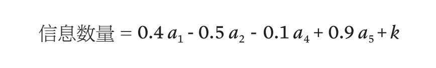
这里
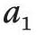
代表在1~5分之间给你评1分的人数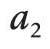
代表给你评2分的人数，以此类推。最后的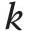
代表你在网站上的活跃程度。表达式每部分（或者更准确地称为“项”）开头的数字直接来自统计数据，代表你得到的魅力值是如何影响你收到的信息数量的。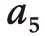
项前的“+0.9”意味着每当有100个人认为你是全5分的性感尤物时，你便能期待每个月收到90条新信息。你真幸运！得到5分意味着会收到更多消息，这合情合理。然而令人惊讶的是
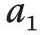
项前的“+0.4”意味着在OkCupid上，每当有100个人为你评了1分，你每个月会多收到40条信息。是的，你没看错。即便长了张狗啃的脸，你依然能收到更多信息。相比之下，
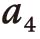
项前的“-0.1”意味着每当有100个人为你打了4分，你将少收到10条信息。在满分为5分的情形中得到4分实际上是对你不利的。综上所述，只要有人觉得你漂亮，那么还有些人觉得你长得丑便要好过每个人都认为你“还不错”。当然那些美得让人难以置信、得到全5分的人总是会有很好的结果，然而对于我们其余的人来说，试图成为那个可爱的邻家男孩或邻家女孩不如获得争议来得有效。
这似乎有违直觉，但或许那些发信息的用户同时也在考虑自己的机会：如果他们认为你很美，而别人不一定有同感，竞争会少些，这便给了他们额外的联系你的动力。然而如果他们觉得你很美，并且确定别人也觉得你很美，那么他们会猜想你会收到很多信息，于是决定不必自取其辱。
现在到了最有趣的部分。人们在交友网站上选择头像时都会试图隐藏自己不美的一面。经典例子包括，肥胖人士选择大量处理过的照片，秃头男士选择戴帽子的照片。你应该做的却恰恰相反。选择头像时，你应该尽量显示出自己的不同，包括有些人或许不喜欢的方面。
那些迷恋你的人依然会迷恋你。而那些不喜欢你的不重要的人只会让你受益。
所以为那块光秃秃的头皮而骄傲吧，炫出那个欠考虑的文身，露出那块大肚腩。因为在网上表现出你的不同仅仅意味着做自己。可谁又会像你一样想到这一点呢？
[1] 当问题数量为时，表达式是：
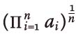
。[2] 这些都是真事。